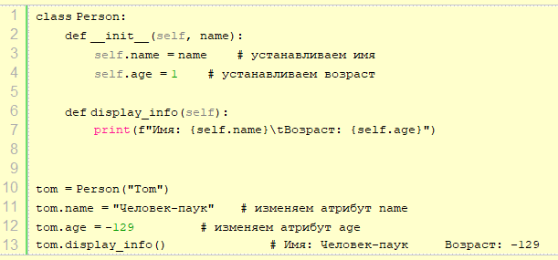
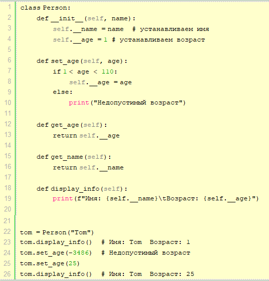
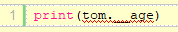
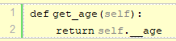
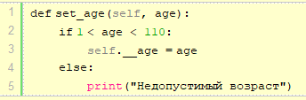
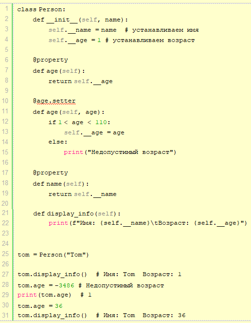

| Тема 3. Инкапсуляция, атрибуты и свойства. | ||
| Назад | ||
|
По умолчанию атрибуты в классах являются общедоступными, а это значит, что из любого места программы мы можем получить атрибут объекта и изменить его. Например:
 Но в данном случае мы можем, к примеру, присвоить возрасту или имени человека некорректное значение, например, указать отрицательный возраст. Подобное поведение нежелательно, поэтому встает вопрос о контроле за доступом к атрибутам объекта. С данной проблемой тесно связано понятие инкапсуляции. Инкапсуляция является фундаментальной концепцией объектно-ориентированного программирования. Она предотвращает прямой доступ к атрибутам объект из вызывающего кода. Касательно инкапсуляции непосредственно в языке программирования Python скрыть атрибуты класса можно сделав их приватными или закрытыми и ограничив доступ к ним через специальные методы, которые еще называются свойствами. Изменим выше определенный класс, определив в нем свойства:

Для создания приватного атрибута в начале его наименования
ставится двойной прочерк:
Потому что в данном случае просто определяется динамически новый
атрибут __age, но это он не имеет ничего общего с атрибутом А попытка получить его значение приведет к ошибке выполнения (если ранее не была определена переменная __age):
 Однако все же нам может потребоваться устанавливать возраст пользователя из вне. Для этого создаются свойства. Используя одно свойство, мы можем получить значение атрибута:
 Данный метод еще часто называют геттер или аксессор. Для изменения возраста определено другое свойство:
 Данный метод еще называют сеттер или мьютейтор (mutator). Здесь мы уже можем решить в зависимости от условий, надо ли переустанавливать возраст. Необязательно создавать для каждого приватного атрибута подобную пару свойств. Так, в примере выше имя человека мы можем установить только из конструктора. А для получение определен метод get_name. Аннотации свойствВыше мы рассмотрели, как создавать свойства. Но Python имеет также еще один - более элегантный способ определения свойств. Этот способ предполагает использование аннотаций, которые предваряются символом @. Для создания свойства-геттера над свойством ставится аннотация @property. Для создания свойства-сеттера над свойством устанавливается аннотация имя_свойства_геттера.setter. Перепишем класс Person с использованием аннотаций:
 Во-первых, стоит обратить внимание, что свойство-сеттер определяется после свойства-геттера.
Во-вторых, и сеттер, и геттер называются одинаково - age. И
поскольку геттер называется age, то над сеттером устанавливается
аннотация
После этого, что к геттеру, что к сеттеру, мы обращаемся через
выражение
|
||
| Конспект подготовлен Бакулиным А. М. 2012 год. | ||